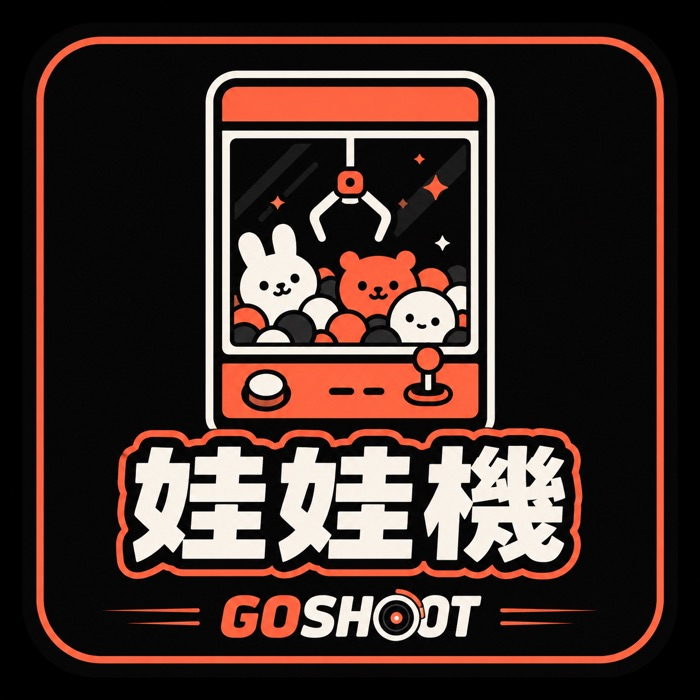

戰鬥陀螺主題
Beyblade X 情報、店內對戰台，開打就來，每週六固定開戰。
Beyblade X 情報、店內對戰台，開打就來，每週六固定開戰。

捷運站旁 24 小時開放，深夜也能來夾。熱門 IP 娃娃、公仔、周邊持續補台。新手先看〈夾娃娃機技巧入門〉、〈韓系娃娃機是什麼〉、〈無人娃娃機店怎麼運作〉與〈保夾原理與消保規範〉與〈娃娃機術語黑話對照表〉。

手機免下載直接抽，每抽必中獎，公開亂數保證公平。中獎可宅配、到店取或折抵消費。
裝潢中實拍。整層走韓系選物路線，橘色燈條打底、走道留寬，深夜一個人來也不會覺得壓迫。
掃碼進官網
線上一番賞・攻略・門市資訊捷運中和站旁。出站沿景平路走，門口玻璃門上有滿版的 24 小時營業窗貼， 晚上認發光招牌最快。
在連城路口站下車，步行約 1 分鐘就到。 這站是景平路上最近的一站。
全區 24 小時營業、無人自助，不必配合店員上下班。 下班太晚、假日太擠的時段反而最好逛。
地址是新北市中和區景平路593號之1。順路的話， 中和一帶還有興南夜市、烘爐地夜景可以一起排，路線我們整理在 中和景平路順遊指南。
有。Go Shoot 中和門市位於新北市中和區景平路593號之1、捷運中和站旁，全區 24 小時營業、無人自助，深夜也能進來夾。
捷運中和站旁，或搭公車在連城路口站下車、步行約 1 分鐘。地址新北市中和區景平路593號之1，門口玻璃門上有 24 小時營業窗貼。
還有戰鬥陀螺對戰台，店內賽事每週六舉辦；以及線上一番賞，手機免下載就能抽、每抽必中獎，中獎的正版商品可以宅配到府、到門市自取，或折抵店內消費。
可以。線上一番賞手機網頁直接抽，不必下載 App、不受營業時間限制，抽獎過程的亂數公開可驗證。抽中的獎品選宅配就會寄到府上。
可以，但名額有限。月租 3,000 元含水電、免押金，機台由店家提供，一人限租一台。詳細條件看台位出租說明。
地下室有休息區，備有座椅與展示櫃，夾累了可以下去坐一下再上來。